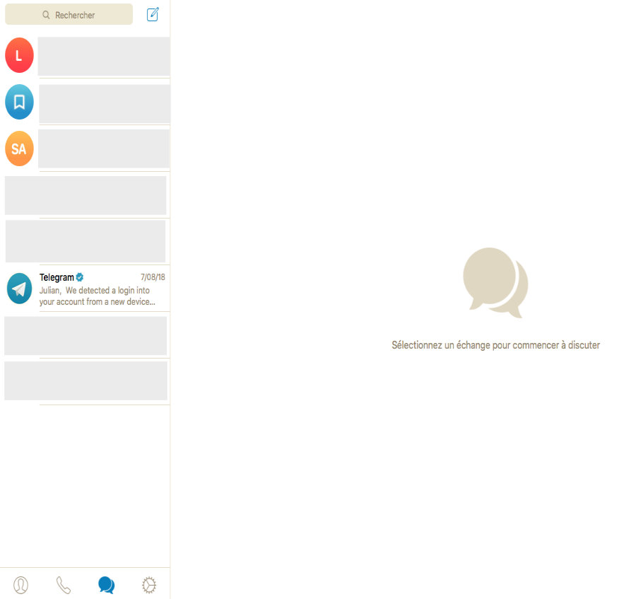
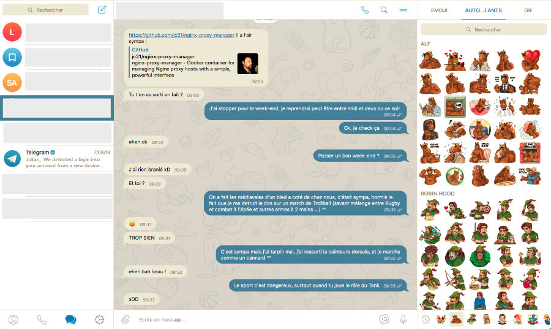

Les messageries instantanées alternatives
Les messageries instantanées propriétaires
- Messenger et WhatsApp de Facebook
- Snapchat
- Skype(Microsoft), Viber(Rakuten), Line ...
Applications gratuites, simples à l'utilisation adossé à un eco-système mais ...
Données centralisées, chiffrement douteux, utilisations des données ?
Les messageries instantanées alternatives
- Partiellement open source ou libre
- Chiffrement et décentralisation
#2
Telegram
- Hebergé en Cloud · Chiffrement de bout en bout, non stockée sur les serveurs
- Partielement open souce : Client libre / Serveur sous licence propriétaire
Vue du client
Vue du client (suite)
#3
Wire
- Chiffrement de bout en bout, Hébergé en Europe, 100% Open Source
- Conversation, Partage de fichier & conférences


#4
Signal
- Chiffrement de bout en bout, Open Source, Multiplateforme
- Besoin d'un numéro de téléphone & Google Play Services pour fonctionner (Android)

#5
Tox
- Open Source, Pair à Pair, Chiffrement
- Décentralisé · Multiplateforme

Et même dans un terminal

#6
Ring
- Décentralisé · Libre · Multiplateforme
- Novateur : Repose sur un protocole DHT & une Blockchain


Les Messageries Instantanées Collaboratives
Slack & Discord dominent ce marché dans les entreprises/associations.
Naturellement Facebook Messenger/WhatsApp ont conquis grand nombres de groupes d'amis et d'assos
Petit tour de 3 alternatives
#8
Rocket Chat
- Multiples intégrations · Personnalisable
- Multiplateformes · Traduction en temps réel

#9
Riot IM
- Repose sur Matrix : Protocole OpenSource et décentralisé
- Conversations · Transfert de fichier · VOIP · Chiffrement de bout à bout

#10
Mattermost
- Hebergeable · Stockage & intégrations illimités
- Version Gratuite pour les communautés · Version payante pour entreprises avec option supplémentaires
- Partage de fichiers & vidéo en conversation duo en bêta


#11
Bonus : Keybase.io
- Certification de l'identité avec tiers : PGP, Réseaux Sociaux, DNS ...
- Multiplateforme · Conversation duo & groupe · Partage de fichiers
- Serveur centralisé